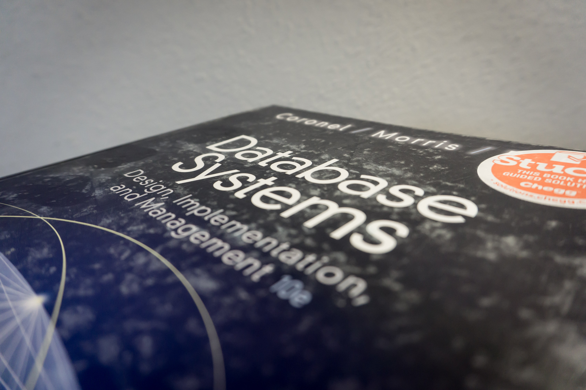

Every year, college textbooks get increasingly more expensive. Buying these textbooks new can take a large chunk out of a student's often measly paycheck. Therefore, many students choose to buy used, usually from an online book reseller or used book store. However, the best sources of used textbooks are the students who took the course previously. This project will help facilitate the selling and trade of textbooks between fellow students by providing a database of textbooks for sale for different courses. |
 |
Initially, this web-based application will be deployed at USAFA so that cadets can buy and sell books from other cadets wing-wide rather than from just their own squadron. While eventually the application may be adopted for use at other schools, this semester the team will be focusing on tailoring the database to USAFA. To begin, our external clients will be the squadron academic officer in each group member’s squadron. We will use them to get information on the current systems in place (usually a google doc or spreadsheet) and they will aid in the deployment of the application in each squad. When as the project is completed, these squadron academic officers can then distribute it to other squadrons well via the wing academic officer, thereby spreading the application across the whole wing. The functions provided to the user via this database will include (but are not limited to) adding a textbook for sale, removing a textbook from the database, and looking up textbooks required by courses taken previously by students. The user will perform these functions using a web application and form, where they will fill out information about the textbook, or select database entries to inspect. In order to purchase a textbook, the user will contact the number or email saved with the textbook listing to make an offline transaction. |